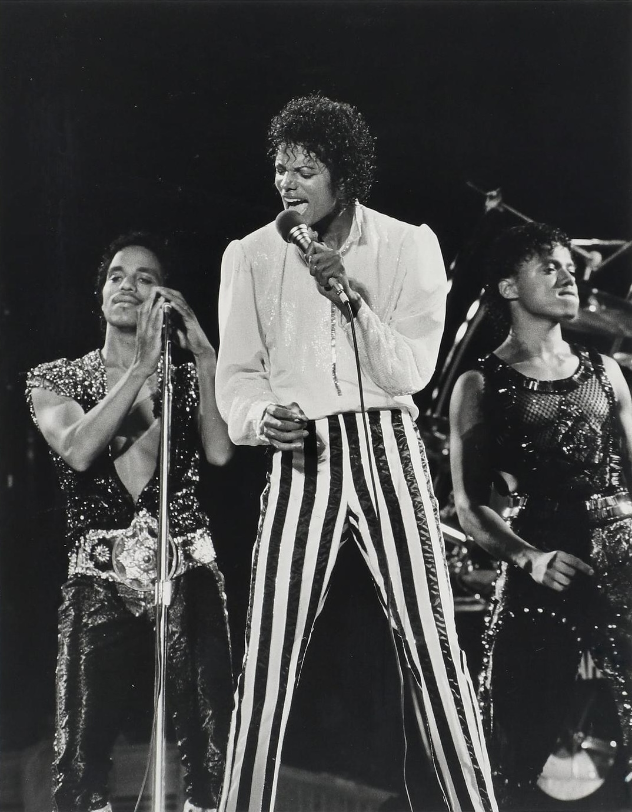

Que impacto teve na sociedade?
Não foi uma boa ação pontual: foi uma alteração de posição. Ocupou o centro de uma indústria que dividia o mercado por raça.
Em 1983, a MTV recusou «Billie Jean». A CBS ameaçou retirar outros artistas e o vídeo entrou em rotação. A partir daí, artistas negros passaram a ser programados sem aviso prévio.
E mudou o produto: álbum, vídeo e digressão passaram a ser uma só experiência.
Ligação: impacto real, mas não simples — por isso o capítulo
termina com um modelo, não com um veredicto.
